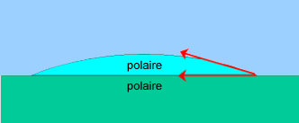
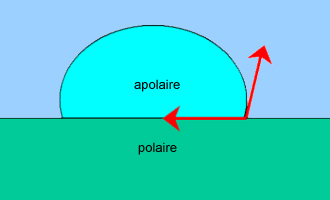
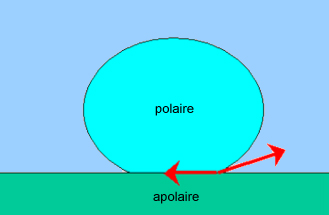
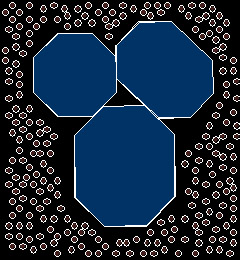
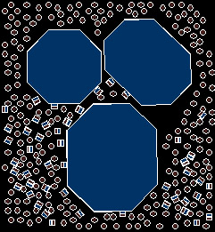
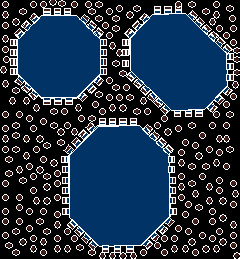

|
|
Navig.
page/section


_____
|
|
Pages soeurs
I, A propos des liants
II, Bulles, siccativ., struct. élec.
III, Caséine, phosphore, dissociation
IV, Les orbitales
V, L'aérogel
VI, Polarisation de la lumière
VII, Sfumato et diffusion Rayleigh
VIII, Les interférentielles
IX, Dextrine, farine et chiralité
X, L'ocre bleue
XI, Les métamatériaux
XII, Le jaunissement
XIII, Laser etc.
XIV, L'holographie
XV, L'holographie numérique
XVI, Extérieur, intérieur, chaux
XVII, L'électrolyse et les ions
XVIII, L'électricité, un peu plus loin
XIX, Oxydation, métaux
XX, Les échelles
XXI, Nature et évolution des résines
XXII, Le mouillage pigmentaire
XXIII, La molette
XXIV, Blanche neige
XXV, Lumière et matière
XXVI, Magnétisme
XXVII, Ambre et vieilles branches
XXVIII, L'origami miroir
XXIX, Le feu
XXX, Peau du métal
XXXI, La ville en un souffle
XXXII, Oxyder des matériaux
XXXIII, Ocre bleue, une solution
_____
|
Copyright © www.dotapea.com
Tous droits réservés.
Précisions cliquer ici
|
|
| |
|
|
Les dialogues sur la physique-chimie
appliquée aux arts
Chapitre
XXII
Le mouillage
pigmentaire
|
 |
dial dial
dial
|
Ce chapitre est une discussion entre Jean-Claude, physico-chimiste spécialiste
des propriétés optiques des matériaux hétérogènes, à qui on souhaite bienvenue
aux Dialogues de Dotapea, Jean-Louis,
physico-chimiste au CNRS, et le candide, Emmanuel.
Nous commençons très fort avec Jean-Claude car il est question ici d'un sujet
majeur dans le domaine des arts picturaux. Majeur et difficile : la rédaction de
ce texte s'est étalée sur plus de quatre mois.
L'entrée en matière, en particulier, n'a pas été facile à mettre en place. Plus
nous avancions, plus nous découvrions qu'il fallait remonter loin en amont si
nous voulions rester aussi cohérents et explicites que possible. Nous avons
d'ailleurs dû créer un important document annexe
tant le sujet se ramifiait. Bien sûr on n'y
parvient peut-être pas autant que nous voudrions et c'est pour cette raison que
ce chapitre reste ouvert à des modifications ultérieures.
|
|
Emmanuel :
Jean-Louis je crois que tu veux aborder en premier lieu certaines
propriétés plutôt fondamentales de la matière qui sont au coeur de ce
sujet.
Jean-Louis : Oui. Aborder la question du mouillage sera
plus naturel, je crois, si l'on commence par poser le problème du gras
et du pas gras, de l'hydrophile et de l'hydrophobe.
|
|
|
|
Les molécules (en général, ça inclut les solvants entre eux, les
liquides et les solides) peuvent être classées en fonction de leur
polarité.
La polarité c'est, pour simplifier un peu, la présence ou l'absence d'un
moment dipolaire. Un moment dipolaire, c'est une charge + et une charge
- à côté l'une de l'autre, pas au même endroit.
Plus globalement nous avons les cas suivants :
* les
apolaires :
* pas
de charges, pas de champ électrique,
* deux
charges égales et opposées au même endroit, pas de champ non plus (les
deux champs s'annulent),
* les
polaires :
* deux
charges égales et opposées très proches, existence d'un champ faible dit
"dipolaire", les deux champs s'annulent "presque" car ils sont décalés.
Les molécules polaires aiment les molécules polaires, les apolaires
aiment les apolaires.
Imagine un sac avec des billes de
verre et des aimants. Si tu secoues un peu le sac (=agitation thermique)
tu auras tous les aimants collés ensemble, et des billes sans aimants.
Si tu mets un liquide polaire (= eau) dans un non-polaire (huile), le
dipôle de chaque molécule d'eau va se chercher un petit copain
dipôle,
et rapidement toutes les molécules d'eau vont se retrouver collées
ensemble.
Quelques cas typiques.
Polaires : eau, alcool, acétone. Apolaires : alcanes (hexane,
heptane,...), benzène, éther. Si on essaie de mêler les deux, par
exemple eau + hexane, ça ne se mélange pas, ça donne toutes sortes de
choses généralement instables comme la vinaigrette ou le lait.
|
|
Sur les concepts
de moment et de
polarité, lire
le document en annexe pour
une bonne compréhension
de ce chapitre.

Cliquer ici |
|
Si on fait maintenant interagir un solide et un liquide, on voit
apparaître assez naturellement la notion de mouillage et d'angle de
contact.
Une goutte d'eau pure sur une plaque de verre propre s'étale
parfaitement bien. On dit que l'on a mouillage, l'angle de contact tend
vers zéro. Le verre est en effet polaire, comme l'eau.

Une goutte d'huile sur une plaque de verre ne s'étale pas : liquide
apolaire sur solide polaire.

Une goutte d'eau sur une plaque de paraffine solidifiée ne s'étale
pas, c'est la situation inverse.

Dans ces deux derniers cas il n'y a pas mouillage, l'angle de contact
est de l'ordre de 90°, voire supérieur : goutte de mercure sur une
plaque de verre, quasi 180° !
|
|
Le
principe du mouillage expliqué par l'image |
Si on passe maintenant au mouillage des pigments
solides par des liquides, le problème se complique car on n'a pas
affaire à des surfaces lisses idéales mais à des petits grains
irréguliers, et généralement pas très propres d'un point de vue
physico-chimique. L'origine de ces molécules étrangère est diverse,
elles sont généralement apportées par l'air ambiant. Selon sa nature
propre, polaire ou non c'est-à-dire hydrophile ou hydrophobe, chaque
grain de pigment aura une tendance naturelle à capter des molécules
ayant la même affinité.
Ainsi une surface hydrophile poreuse sera littéralement gorgée d'eau.
Cette eau absorbée sur la surface et dans les pores sera généralement
très liée et quasi-impossible à extraire, sauf à employer des moyens
puissants comme un chauffage au delà de 100°C, éventuellement sous vide.
De la même façon, un grain de pigment apolaire (hydrophobe) n'aura aucun
mal à se couvrir de "gras".
|
|
Du
principe à la réalité |
On comprend qu'il soit ensuite difficile de disperser un pigment polaire
dans l'huile et un pigment apolaire dans l'eau. Il faudra donc, comme
pour se laver les mains, utiliser un tensioactif
qui joue le rôle d'entremetteur et prend à sa charge les conflits
d'énergies de surface. La molécule de tensioactif, un peu schizophrène
avec sa partie polaire (on dit souvent "tête polaire") et sa partie
hydrophobe ("queue hydrophobe") va rendre compatibles les deux espèces.
La partie polaire du surfactant
ira par exemple s'accrocher aux molécules d'eau de la surface du
pigment, laissant la partie extérieure hydrophobe libre d'interagir avec
l'huile.
Emmanuel :
Comment est-ce que tu situes ces tensioactifs par rapport aux
amphiphiles dont tu parlais dans le chapitre I ?
Jean-Louis :
c'est sensiblement la même chose. Ce sont des molécules qui aiment
les interfaces (amphi-philos).
|
|
Au sujet des tensioactifs, lire aussi un
passage sur les
« amphiphiles » in chap. I, A propos des liants |
| Globalement on peut encore
tourner la question autrement. Le pigment est très souvent un solide, donc difficile à étaler.
On a
depuis les origines cherché quelque chose qui facilite l'étalement (eau,
graisse, huile, cire, oeuf...), qui disperse le pigment (fabrication de
mélanges, couleurs plus ou moins saturées) et qui stabilise l'ensemble
(une encyclopédie de stabilisants !). Après il y a le cas des pigments
liquides ou solubles, mais je présume que ceux-là, on les exclut de la
discussion puisque forcément, il n'y a pas mouillage s'il y a
dissolution.
|
|
Comment étaler
le pigment, une question primordiale |
Jean-Claude
(*)
: Pour appréhender les processus physico-chimiques liés au
mouillage, il me paraît intéressant de replacer le phénomène dans le
contexte de la formulation d'une peinture.
En général, les pigments arrivent sur le site de production sous forme
de poudre emballée dans des sacs dont les dimensions peuvent aller
jusqu'à un mètre cube. Les distributions en taille de ces poudres sont
contrôlées et garanties par les fabricants au moment de leur production.
Cependant, les conditions de transport et stockage de ces sacs
(pression, température, humidité) conduisent généralement à la formation
d'agrégats compacts qui peuvent contenir de petits volumes d'air
enfermés dans des interstices.
En absence de tensioactif (figure ci-dessous), le pigment lyophobe
[voir plus loin] n'est
que (par définition) très faiblement compatible avec le solvant dont les
molécules ne parviennent pas à interagir favorablement avec la surface
des particules.

En migrant aux interfaces
pigments / solvant (ci-dessous), les surfactants qui possèdent une
partie lyophile et une autre lyophobe, vont permettre d'activer le
processus de solvatation
de chaque particule.

A l'échelle moléculaire, les surfactants créent un
"pont" entre la surface du pigment et le plus gros du solvant,
permettant ainsi d'abaisser l'énergie de
surface. Le mouillage progressif de toutes les interfaces conduit à
la dissociation des agrégats et le cas échéant à la libération des
volumes d'air emprisonnés.

Lorsque le processus de mouillage est terminé (image
ci-dessus), la présence des surfactants absorbés sur les surfaces de
chaque particule permet une incorporation optimum de tous les pigments
dans le solvant. Pour faciliter ce processus, le mélange (solvant +
surfactants + pigments) est simultanément mélangé.
|
|
L'état du
pigment |
|
La structure des
surfactants dépend du type de pigments et de la nature du solvant. Les
systèmes de tensioactifs ne sont effectivement pas les mêmes pour des
systèmes aqueux et des solvants organiques.
C'est d'ailleurs un problème
majeur dans l'industrie des peintures où pour des raisons économiques,
il est souhaitable de créer des
colorants "universels" c'est-à-dire pouvant être utilisés dans des
peintures blanches à l'huile ou à l'eau et sur tous les types de
pigments.
Malheureusement il est difficile d'obtenir de tels colorants dans une
grande gamme de couleurs car généralement les systèmes de
tensioactifs fonctionnant en base aqueuse ne fonctionnent pas (ou moins
bien) pour des bases organiques (et inversement).
Dans les systèmes aqueux, la partie hydrophile du tensioactif peut être
ionique (cationique ou anionique) alors que la partie hydrophobe est une
chaîne carbonée (voir les alkyl ethercarboxylate ou les alkyl
ethersulfate). Dans ce cas là je crois que l'on peut parler de
polymères mêmes si le nombre de
monomères est
très faible.
Jean-Louis : Beaucoup de tensioactifs ne sont pas de
nature polymère et par ailleurs ils ne sont pas forcément indispensables.
On peut très bien s'en passer par exemple dans la peinture à l'huile
traditionnelle (huile+pigment+solvant).
Jean-Claude : D'autres
points importants : |
|
Surfactants et
colorants universels |
|
1) Le
mouillage n'est que le processus précurseur à une phase plus importante
qui est celle de la
stabilisation des pigments
qui garantira les bonnes performances de la peinture. En effet, une fois
les pigments correctement mouillés, on utilise des polymères de haut
poids moléculaire pour ralentir les phénomènes de
floculation et de sédimentation qui sont
malheureusement inévitables dans un système
colloïdal.
Cette stabilisation se fait par répulsions ioniques et
stériques dans des bases aqueuses uniquement
pour des bases organiques. Il apparaît ensuite des phénomènes de
compétitivité sur les interfaces entre les différents tensioactifs
présents (modificateurs rhéologiques inclus)
qui peuvent altérer la qualité de la peinture, car l'absorption étant un
équilibre dynamique, un tensioactif peut en déplacer un autre.
2) Il
est primordial de n'introduire que la juste quantité (ni plus ni moins)
de surfactants nécessaire pour couvrir tous les pigments.
Si cette quantité est insuffisante, certaines interfaces
"pigments / solvant" ne seront pas couvertes, et il restera de nombreux
pigments dont la compatibilité ne sera que partielle voire totalement
nulle avec le solvant.
Par contre si cette quantité est trop importante,
l'excès de surfactant prendra la forme de
micelles dont la présence peut entraîner un amoindrissement de
certaines propriétés de la couche de peinture une fois appliquée. Le
calcul de cette juste quantité se fait par des approches semi-
empiriques.
|
|
Le mouillage
n'est qu'un début |
Emmanuel :
Jean-Claude, tu nous parlais hors-texte d'autres concepts, la lyophilie
et la lyophobie, à comparer avec l'hydrophobie et l'hydrophilie.
Jean-Claude :
"Lyo" provient du Grec et signifie "fluide". Par conséquent,
lyophobie et lyophilie sont les termes généraux que l'on utilise pour
caractériser un élément qui n'a pas d'affinité ou au contraire qui à une
très forte affinité avec le milieu liquide dans lequel il est dispersé.
Lorsque le milieu est de l'eau, on préfère utiliser les termes plus
spécifiques et plus connus qui sont l'hydrophobie et l'hydrophilie
("hydro" signifiant "eau" en grec).
Emmanuel :
Tu esquissais aussi une approche de la question du mouillage par
la compétition entre forces de cohésion et forces d'étalement. Ça fait
penser au phénomène de tensioactivité,
est-ce que cela a un rapport ?
Peux-tu en dire un peu plus sur ces différents sujets ?
Jean-Claude :
C'est plus complexe, mais en effet on peut déjà dire que le
mouillage est un phénomène lié à la tensioactivité.
A partir des explications que Jean-Louis nous a données, on comprend que
si l'on dépose une goutte de liquide sur une surface solide, le système
peut évoluer de deux façons différentes : ou bien en s'étalant, ou bien
en se "rétractant". Le sens de l'évolution du système est donné par le
rapport de toutes les forces en présence.
|
|
Lyo ou hydro ? |
Prenons l'exemple d'une mêlée dans un match de rugby.
Au moment de l'introduction du ballon, chaque équipe pousse dans une
direction opposée. Au final, la mêlée se déplacera dans le sens de la
poussée la plus forte. Pour le phénomène de mouillage c'est un peu la
même chose, sauf que l'origine des forces en présences n'est évidemment
pas musculaire.
* D'un
côté nous avons les
forces de cohésion
du liquide responsables de la tension de surface ou encore appelée
énergie superficielle. Rappelons brièvement que la matérialisation
macroscopique de ces forces est
la résistance du fluide à augmenter
l'aire de son interface avec sa phase gazeuse. Autrement
dit, parce que chaque molécule est énergétiquement plus stable
lorsqu'elle est entourée de ses congénères, il faut fournir de
l'énergie au système si l'on veut apporter une molécule vers la
surface.
* De
l'autre côté, il y a les
forces
d'interaction entre les molécules du solvant et les
molécules se trouvant à la surface du solide. Elles ont les mêmes
origines quantique et électrique que les forces de cohésion mais le
fait des les distinguer au niveau macroscopique permet une meilleur
compréhension du phénomène de mouillage dans sa globalité.
Maintenant, sachant que pour être à l'équilibre, l'énergie totale du
système doit être minimal, deux cas peuvent se produire :
1)
La force de cohésion du fluide est supérieure à la force d'interaction
entre les molécules du fluide et les molécules de la surface. Dans ce
cas, pour minimiser l'énergie totale
le fluide minimisera sa surface de
contact avec le solide.
2)
La force de cohésion du fluide est inférieure à la force d'interaction
entre les molécules du fluide et les molécules de la surface. Dans ce
cas, toujours pour minimiser l'énergie totale, les molécules de
fluides voudront s'entourer d'un maximum de molécules du solide et
le fluide s'étalera pour maximiser sa surface de contact.
L'étalement de la goutte s'arrêtera lorsque la force de cohésion
pourra de nouveau contrebalancer toutes les autres forces en présence.
Il est d'ailleurs possible de calculer un coefficient d'étalement (spreading
coefficient en anglais) si l'on connaît la tension superficielle
du fluide et l'énergie de surface du solide.
|
|
Comment les
forces en présence dans le fluide en modifient la forme au contact du
solide |
| Ce que j'ai préalablement et
maladroitement appelé force d'étalement correspond en fait à ce que l'on
appelle la force
de montée capillaire que l'on peut observer lorsque qu'un
liquide mouille les parois d'un tube. Dans ce cas la montée capillaire
s'arrête lorsque la force d'interaction favorisant l'interaction entre
les molécules du fluide et celle de la paroi sont contrebalancées par la
force de gravité et la force de cohésion du fluide. |
|
La « force
d'étalement » comme « effet capillaire » |
Il doit être bien clair que le phénomène de mouillage
met en jeu l'interaction entre les molécules du liquide et les molécules
se situant à la surface du solide et non celles se trouvant dans son
volume. Par conséquent, comme l'a indiqué précédemment Jean-Louis, une
contamination de la surface par des molécules étrangères peut altérer le
rapport des forces en présences et modifier le sens de l'évolution du
système. Cette extrême sensibilité à la constitution chimique de la
surface pose de nombreux problèmes dans la formulation de peintures.
Prenons l'exemple du dioxyde de titane (TiO2).

C'est le
pigment le plus utilisé dans la formulation de peintures blanches. Il
a l'extrême désavantage de réagir fortement aux rayonnements lumineux en
libérant des électrons (effet photocatalytique). La présence de ces
électrons libres favorise la création de radicaux libres (eux aussi) qui
vont fragiliser le réseau tridimensionnel polymère du film de peinture.
|
|
Les impuretés
changent le rapport de force |
|
Pour limiter cet effet indésirable, les fabricants de TiO2
recouvrent la surface des pigments d'une ou plusieurs couches
d'oxyde de zinc (ZnO) ou / et
d'alumine (Al2O3) et qui
permettent de capturer les électrons libérés par le TiO2
avant qu'ils ne migrent vers la résine polymère.
|
|
Au sujet du pigment
enrobé, lire passage
in Les ciments et peintures autonettoyants |
|
Chaque fabriquant possède sa
propre solution miracle et par conséquent l'épaisseur et la
constitution chimique des couches d'additifs varient d'un fournisseurs à
l'autre. Pour le formulateur de peinture c'est un casse-tête
supplémentaire.
En effet si le département des achats de sa compagnie décide de
changer de fournisseur de TiO2 afin de réaliser des économies
d'échelle sur le prix du pigment au kilo, il y a de fortes chances pour
que le système de tensioactifs permettant le mouillage ne fonctionne
plus et doive être de nouveau optimisé.
|
|
Problèmes
concrets des mouilleurs de pigments |
|
Notons également que c'est l'absence de mouillage sur un substrat qui
est la propriété principale que l'on cherche à maximiser dans
l'élaboration de peintures anti-graffitis. L'idée est de recouvrir les
surfaces à protéger d'une fine pellicule d'un matériel qui soit
fortement lyophobe à tous les types de solvant présent dans les stylos
ou peintures utilisés par les "tagueurs".
|
|
Le mouillage
n'est pas toujours recherché ! |
|
Finalement, il est important de mentionner que pour faciliter
l'explication microscopique du phénomène de mouillage, il a fallu passer
sous silence la notion d'entropie qui est pourtant primordiale en
physico-chimie.
En effet, les énergies d'interactions, ne sont pas les seules
composantes de l'énergie totale d'un système. Il existe également un
terme définit comme le produit de la température T par l'entropie S (TS
ayant la dimension d'une énergie).
L'entropie est une mesure du désordre du système et la deuxième loi
de la thermodynamique nous dit que la variation d'entropie va toujours
en augmentant. Par exemple, on a tous déjà vu un verre chuter depuis une
table et se briser en mille morceaux sur le sol. Par contre personne n'a
encore jamais vu ces mêmes morceaux se rassembler spontanément pour
reconstituer le verre.
Emmanuel : Il y a un autre
exemple que j'aime bien aussi, même si je ne suis pas sûr de bien le
restituer :
Je roule à vélo et je freine pour
m'arrêter. Toute mon énergie cinétique est transformée en chaleur au
niveau du patin de frein. Par contre je n'aurais jamais le moyen de
transformer l'intégralité de cette énergie thermique en énergie cinétique.
J'espère que nous aurons l'occasion de
revenir sous peu sur ce sujet. |
|
Nous avons fait
une impasse |
|
Lire le document annexe
Chapitre suivant |
Retour
début de page
|
|

 Communication
Communication
|
|